전기산업기사 (2014-08-17 기출문제)
1과목: 전기자기학
1. 공기 중에서 무한평면도체 표면 아래의 1m 떨어진 곳에 1C의 점전하가 있다. 전하가 받는 힘의 크기는 몇 N 인가?
- 9×109
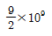
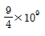
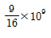
(정답률: 65%)

2. 1m의 간격을 가진 선간전압 66000V인 2개의 평행 왕복 도선에 10kA의 전류가 흐를 때 도선 1m 마다 작용하는 힘의 크기는 몇 N/m인가?
- 1
- 10
- 20
- 200
(정답률: 65%)
3. 비투자율 800의 환상철심으로 하여 권선 600회 감아서 환상솔레노이드를 만들었다. 이 솔레노이드의 평균 반경이 20cm이고, 단면적이 10cm2이다. 이 권선에 전류 1A를 흘리면 내부에 통하는 자속[wb]은?
- 2.7×10-4
- 4.8×10-4
- 6.8×10-4
- 9.6×10-4
(정답률: 56%)
4. 대지면에서 높이 h[m]로 가선된 대단히 긴 평행도선의 선전하(선전하 밀도 λ[C/ㅡ])가 지면으로부터 받는 힘[N/m]은?
- h에 비례 h
- h2에 비례
- h에 반비례
- h2에 반비례
(정답률: 68%)
5. 단면의 지름이 D[m], 권수가 n[회/m]인 무한장 솔레노이드에 전류 I[A]를 흘렸을 때, 길이 l[m]에 대한 인덕턴스 L[H]는 얼마인가?
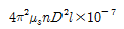
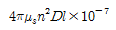
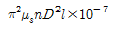
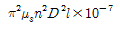
(정답률: 47%)
6. 전계 E[V/m] 및 자계 H[AT/m]의 전자계가 평면파를 이루고 공기 중을 3×108[m/s]의 속도로 전파될 때 단위 시간당 단위 면적을 지나는 에너지는 몇 W/m2인가?
- EH
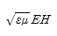
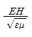
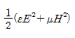
(정답률: 80%)
7. 액체 유전체를 포함한 콘덴서 용량이 C[F]인 것에 V[V]의 전압을 가했을 경우에 흐르는 누설전류[A]는? (단, 유전체의 유전율은 ℇ, 고유저항은 p라 한다.)
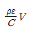
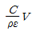
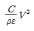
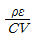
(정답률: 67%)
8. Q1[C]으로 대전된 용량 C1[F]의 콘덴서에 C2[F]를 병렬 연결한 경우 C2가 분배받는 전기량 Q2[C]는? (단, V1[V]은 콘덴서 C1이 Q1으로 충전되었을 때 C1의 양단 전압이다.)
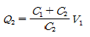
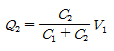
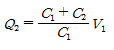
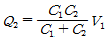
(정답률: 59%)
9. 다음 중 변위 전류에 관한 설명으로 가장 옳은 것은?
- 변위전류 밀도는 전속밀도의 시간적 변화율이다.
- 자유공간에서 변위전류가 만드는 것은 전계이다.
- 변위전류는 도체와 가장 관계가 깊다.
- 시간적으로 변화하지 않는 계에서도 변위전류는 흐른다.
(정답률: 72%)
10. 평면 전자파의 전계 E와 자계 H와의 관계식으로 알맞은 것은?
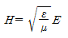
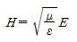
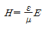
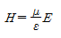
(정답률: 69%)
11. 반지름 a[m]인 무한히 긴 원통형 도선 A, B가 중심 사이의 거리 d[m]로 평행하게 배치되어 있다. 도선 A, B에 각각 단위 길이마다 +Q[C/m], -Q[C/m] 의 전하를 줄 때 두 도선 사이의 전위차는 몇 V인가?
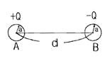
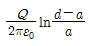
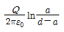
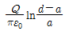
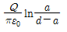
(정답률: 38%)
12. 비유전율 ℇs=5인 유전체 내의 분극률은 몇 F/m인가?
- 10-8/9π
- 109/9π
- 10-9/9π
- 108/9π
(정답률: 67%)
13. 자속 ø[wb]가 ømcos2πft[wb]로 변화할 때 이 자속과 쇄교하는 권수 N회의 코일의 발생하는 기전력은 몇 V인가?
- -πfNømcos2πft
- πfNømsin2πft
- -2πfNømcos2πft
- 2πfNømsin2πft
(정답률: 53%)
14. 반지름 r=a[m]인 원통 도선에 I[A]의 전류가 균일하게 흐를 때, 자계의 최대값 AT/m는?
- I/πa
- I/2πa
- I/3πa
- I/4πa
(정답률: 80%)
15. ㉠ Ω ㆍ sec, ㉡ sec/Ω과 같은 단위는?
- ㉠ H, ㉡ F
- ㉠ H/m, ㉡ F/m
- ㉠ F, ㉡ H
- ㉠ F/m, ㉡ H/m
(정답률: 75%)
16. 유전률 ℇ1＞ℇ2인 두 유전체 경계면에 전속이 수직일 때, 경계면상의 작용력은?
- ℇ1의 유전체에서 ℇ2의 유전체 방향
- ℇ2의 유전체에서 ℇ1의 유전체 방향
- 전속밀도의 방향
- 전속밀도의 반대 방향
(정답률: 79%)
17. 유도계수의 단위에 해당되는 것은?
- C/F
- V/C
- V/m
- C/V
(정답률: 61%)
18. 전류에 의한 자계의 발생 방향을 결정하는 법칙은?
- 비오사바르의 법칙
- 쿨롱의 법칙
- 패러데이의 법칙
- 암페어의 오른손 법칙
(정답률: 75%)
19. 자기회로의 자기 저항에 대한 설명으로 옳지 않은 것은?
- 자기 회로의 단면적에 반비례 한다.
- 자기회로의 길이에 반비례 한다.
- 자성체의 비투자율에 반비례 한다.
- 단위는 AT/wb이다.
(정답률: 71%)
20. 길이 20cm, 단면의 반지름 10cm인 원통이 길이의 방향으로 균일하게 자화되어 자화의 세기가 200 wb/m2인 경우, 원통 양 단자에서의 전 자극의 세기는 몇 wb인가?
- π
- 2π
- 3π
- 4π
(정답률: 62%)
2과목: 전력공학
21. 정삼각형 배치의 선간거리가 5m이고, 전선의 지름이 1cm인 3상 가공 송전선의 1선의 정전용량은 약 몇 ㎌/㎞인가?
- 0.008
- 0.016
- 0.024
- 0.032
(정답률: 61%)
22. 보일러 급수 중에 포함되어 있는 산소 등에 의한 보일러 배관의 부식을 방지할 목적으로 사용되는 장치는?
- 공기 예열기
- 탈기기
- 급수 가열기
- 수위 경보기
(정답률: 78%)
23. 변압기의 손실 중, 철손의 감소 대책이 아닌 것은?
- 자속 밀도의 감소
- 고배향성 규소 강판 사용
- 아몰퍼스 변압기의 채용
- 권선의 단면적 증가
(정답률: 63%)
24. 송전 선로의 절연 설계에 있어서 주된 결정 사항으로 옳지 않은 것은?
- 애자련의 개수
- 전선과 지지물과의 이격거리
- 전선 굵기
- 가공지선의 차폐각도
(정답률: 57%)
25. 가공 전선로의 전선 진동을 방지하기 위한 방법으로 틀린 것은?
- 토셔널 댐퍼의 설치
- 스프링 피스톤 댐퍼와 같은 진동 제지권을 설치
- 경동선을 ACSR로 교환
- 클램프나 전선 접촉기 등을 가벼운 것으로 바꾸고 클램프 부근에 적당히 전선을 첨가
(정답률: 72%)
26. 부하 전류의 차단 능력이 없는 것은?
- 공기 차단기
- 유입 차단기
- 진공 차단기
- 단로기
(정답률: 79%)
27. 차단기가 전류를 차단할 때, 재점호가 일어나기 쉬운 차단 전류는?
- 동상 전류
- 지상 전류
- 진상 전류
- 단락 전류
(정답률: 68%)
28. 전력용 콘덴서에 직렬로 콘덴서 용량의 5% 정도의 유도 리액턴스를 삽입하는 목적은?
- 제 3고조파 전류의 억제
- 제 5고조파 전류의 억제
- 이상전압의 발생 방지
- 정전용량의 조절
(정답률: 76%)
29. 중거리 송전선로에서 T형 회로일 경우 4단자 정수 A는?
- 1+ZY/2
- 1-ZY/4
- Z
- Y
(정답률: 65%)
30. 피뢰기의 제한전압이란?
- 상용주파 전압에 대한 피뢰기의 충격방전 개시전압
- 충격파 전압 침입 시 피뢰기의 충격방전 개시전압
- 피뢰기가 충격파 방전 종류 후 언제나 속류를 확실히 차단할 수 있는 상용주파 최대 전압
- 충격파 전류가 흐르고 있을 때의 피뢰기 단자전압
(정답률: 64%)
31. 3상 수직 배치인 선로에서 오프셋(off set)을 주는 이유는?
- 전선의 진동 억제
- 단락 방지
- 철탑의 중량 감소
- 전선의 풍압 감소
(정답률: 72%)
32. 수차의 특유속도 크기를 바르게 나열한 것은?
- 펠턴수차 < 카플란 수차 < 프란시스 수차
- 펠턴수차 < 프란시스 수차 < 카플란 수차
- 프란시스 수차 < 카플란 수차 < 펠턴 수차
- 카플란 수차 < 펠턴 수차 < 프란시스 수차
(정답률: 65%)
33. 송전선로에서 매설지선을 사용하는 주된 목적은?
- 코로나 전압을 저감시키기 위하여
- 뇌해를 방지하기 위하여
- 탑각 접지저항을 줄여서 섬락을 방지하기 위하여
- 인축의 감전사고를 막기 위하여
(정답률: 59%)
34. 1차 전압 6000V, 권수비 30인 단상 변압기로부터 부하에 20A를 공급할 때, 입력 전력은 몇 kW인가? (단, 변압기 손실은 무시하고, 부하역률은 1로 한다.)
- 2
- 2.5
- 3
- 4
(정답률: 51%)
35. 전력계통의 전압 조정을 위한 방법으로 적당한 것은?
- 계통에 콘덴서 또는 병렬리액터 투입
- 발전기의 유효전력 조정
- 부하의 유효전력 감소
- 계통의 주파수 조정
(정답률: 59%)
36. 송전 선로에 가공 지선을 설치하는 목적은?
- 코로나 방지
- 뇌에 대한 차폐
- 선로 정수의 평형
- 철탑 지지
(정답률: 68%)
37. 설비 A가 150kW, 수용률 0.5, 설비 B가 250kW, 수용률 0.8일 때, 합성 최대전력이 235kW이면 부등률은 약 얼마인가?
- 1.10
- 1.13
- 1.17
- 1.22
(정답률: 65%)
38. 송전단 전압이 3300V, 수전단 전압은 3000V이다. 수전단의 부하를 차단한 경우, 수전단 전압이 3200V라면 이 회로의 전압 변동률은 약 몇 %인가?
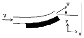
- 3.25
- 4.28
- 5.67
- 6.67
(정답률: 63%)
39. 진상 콘덴서에 2배의 교류 전압을 가했을 때 충전용량은 어떻게 되는가?
- 1/4로 된다.
- 1/2로 된다.
- 2배로 된다.
- 4배로 된다.
(정답률: 41%)
40. 동일한 부하 전력에 대하여 전압을 2배로 승압하면 전압강하, 전압 강하율, 전력 손실률은 각각 어떻게 되는지 순서대로 나열한 것은?
- 1/2, 1/2, 1/2
- 1/2, 1/2, 1/4
- 1/2, 1/4, 1/4
- 1/4, 1/4, 1/4
(정답률: 73%)
3과목: 전기기기
41. 유도전동기의 회전력 발생 요소 중 제곱에 비례하는 요소는?
- 슬립
- 2차 권선저항
- 2차 임피던스
- 2차 기전력
(정답률: 60%)
42. 변압기에 사용되는 절연유의 성질이 아닌 것은?
- 절연내력이 클 것
- 인화점이 낮을 것
- 비열이 커서 냉각효과가 클 것
- 절연재료와 접촉해도 화학작용을 미치지 않을 것
(정답률: 78%)
43. 분로권선 및 직렬권선 1상에 유도되는 기전력을 각각E1, E2[V]라 하고 회전자를 0도에서 180도까지 변화시킬 때 3상 유도전압 조정기의 출력측 선간전압의 조정범위는?
- (E1±E2)/√3
- √3(E1±E2)
- (E1-E2)
- 3(E1+E2)
(정답률: 66%)
44. 단상 및 3상 유도전압 조정기에 관하여 옳게 설명한 것은?
- 단락 권선은 단상 및 3상 유도전압 조정기 모두 필요하다.
- 3상 유도전압 조정기에는 단락 권선이 필요 없다.
- 3상 유도전압 조정기의 1차와 2차 전압은 동상이다.
- 단상 유도전압 조정기의 기전력은 회전 자계에 의해서 유도 된다.
(정답률: 55%)
45. 주파수 50hz, 슬립 0.2인 경우의 회전자 속도가 600rpm일 때에 3상 유도 전동기의 극수는?
- 4
- 8
- 12
- 16
(정답률: 64%)
46. 직류기에 탄소 브러시를 사용하는 주된 이유는?
- 고유 저항이 작기 때문에
- 접촉 저항이 작기 때문에
- 접촉 저항이 크기 때문에
- 고유 저항이 크기 때문에
(정답률: 66%)
47. 직류 발전기에 있어서 계자 철심에 잔류자기가 없어도 발전되는 직류기는?
- 분권 발전기
- 직권 발전기
- 타여자 발전기
- 복권 발전기
(정답률: 66%)
48. 변압기 결선 방식에서 △-△결선 방식의 특성이 아닌 것은?
- 중성점 접지를 할 수 없다.
- 110kV 이상 되는 계통에서 많이 사용되고 있다.
- 외부에 고조파 전압이 나오지 않으므로 통신 장해의 염려가 없다.
- 단상 변압기 3대 중 1대의 고장이 생겼을 때 2대로 V결선하여 송전할 수 있다.
(정답률: 64%)
49. 일반적으로 전철이나 화학용과 같이 비교적 용량이 큰 수은 정류기용 변압기의 2차측 결선방식으로 쓰이는 것은?
- 6상 2중 성형
- 3상 반파
- 3상 전파
- 3상 크로즈파
(정답률: 70%)
50. 시라게 전동기의 특성과 가장 가까운 전동기는?
- 3상 평복권 정류자 전동기
- 3상 복권 정류자 전동기
- 3상 직권 정류자 전동기
- 3상 분권 정류자 전동기
(정답률: 51%)
51. 3300/200V, 10kVA의 단상 변압기의 2차를 단락하여 1차측에 300V를 가하니, 2차에 120A가 흘렀다. 이 변압기의 임피던스 전압[V]와 백분율 임피던스 강하[%]는?
- 125, 3.8
- 200, 4
- 125, 3.5
- 200, 4.2
(정답률: 34%)
52. 정역 운전을 할 수 없는 단상 유도전동기는?
- 분상 기동형
- 세이딩 코일형
- 반발 기동형
- 콘덴서 기동형
(정답률: 59%)
53. 동기기의 과도 안정도를 증가시키는 방법이 아닌 것은?
- 속응 여자방식을 채용한다.
- 회전자의 플라이휠 효과를 크게 한다.
- 동기화 리액턴스를 크게 한다.
- 조속기의 동작을 신속히 한다.
(정답률: 69%)
54. 극수는 6, 회전수가 1200rpm인 교류 발전기와 병렬 운전하는 극수가 8인 교류 발전기의 회전수[rpm]는?
- 1200
- 900
- 750
- 520
(정답률: 75%)
55. 어떤 변압기의 단락시험에서 % 저항강하 1.5%와 %리액턴스 강하 3%를 얻었다. 부하 역률이 80% 앞선 경우의 전압 변동률[%]은?
- -0.6
- 0.6
- -3.0
- 3.0
(정답률: 48%)
56. 교류 발전기의 고조파 발생을 방지하는데 적합하지 않은 것은?
- 전기자 슬롯을 스큐 슬롯으로 한다.
- 전기자 권선의 결선을 Y형으로 한다.
- 전기자 반작용을 작게 한다.
- 전기자 권선을 전절권으로 감는다.
(정답률: 57%)
57. 3상 동기기에서 제동권선의 주 목적은?
- 출력 개선
- 효율 개선
- 역률 개선
- 난조 방지
(정답률: 78%)
58. 직류기에서 전기자 반작용을 방지하기 위한 보상 권선의 전류 방향은?
- 계자 전류의 방향과 같다.
- 계자 전류 방향과 반대이다.
- 전기자 전류 방향과 같다.
- 전기자 전류 방향과 반대이다.
(정답률: 53%)
59. 10극인 직류 발전기의 전기자 도체수가 600, 단중 파권이고 매극의 자속수가 0.01wb. 600rpm일 때의 유도기전력[V]은?
- 150
- 200
- 250
- 300
(정답률: 56%)
60. 전동력 응용기기에서 GD2의 값이 적은 것이 바람직한 기기는?
- 압연기
- 엘리베이터
- 송풍기
- 냉동기
(정답률: 75%)
4과목: 회로이론
61. 다음과 같은 회로가 정저항 회로가 되기 위한 R[Ω]의 값은?
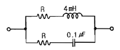
- 200
- 2
- 2×10-2
- 2×10-4
(정답률: 63%)
62. 2전력계법에서 지시 P1=100W, P2=200W일 때 역률[%]은?
- 50.2
- 70.7
- 86.6
- 90.4
(정답률: 62%)
63. Z1=2+j11[Ω], Z2=4-j3[Ω]의 직렬회로에 교류전압 100V를 가할 때 회로에 흐르는 전류는 몇 A인가?
- 10
- 8
- 6
- 4
(정답률: 60%)
64. 주기함수 f(t)의 푸리에 급수 전개식으로 옳은 것은?
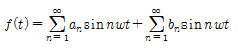
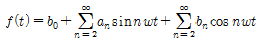
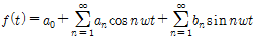
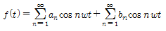
(정답률: 61%)
65. i(t)=I0est[A]로 주어지는 전류가 콘덴서 C[F]에 흐르는 경우의 임피던스 [Ω]는?
- C/s
- 1/sC
- C
- sC
(정답률: 63%)
66. E=40+j30[V]의 전압을 가하면 I=30+j10[A]의 전류가 흐른다. 이 회로의 역률은?
- 0.456
- 0.567
- 0.854
- 0.949
(정답률: 44%)
67. Va=3[V], Vb=2-j3[V], Vc4+j3[V]=를 3상 불평형 전압이라고 할 때, 영상전압[V]은?
- 0
- 3
- 9
- 27
(정답률: 50%)
68. 그림과 같은 회로에서 V-i의 관계식은?
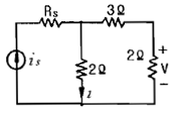
- V=0.8i
- V=isRs-2i
- V=2i
- V=3+0.2i
(정답률: 51%)
69. f(t)=te-at의 라플라스 변환은?
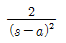
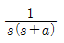
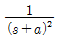
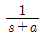
(정답률: 48%)
70. 회로에서 단자 a-b 사이의 합성저항 Rab는 몇 Ω인가? (단, 저항의 크기는 r[Ω]이다.)
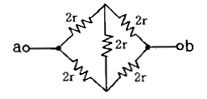
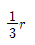
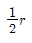
- r
- 2r
(정답률: 56%)
71. R=4Ω, wL=3Ω의 직렬 회로에 e=100√2 sinwt+50√2sin3wt[V]를 가할 때 이 회로의 소비전력은 약 몇 W인가?
- 1414
- 1514
- 1703
- 1903
(정답률: 47%)
72. 그림과 같은 4단자 회로의 어드미턴스 파라미터 중 Y11[℧]은?
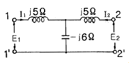
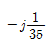
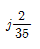
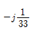
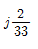
(정답률: 49%)
73. 그림과 같은 회로에서 스위치 S를 닫았을 때 시정수[sec]의 값은? (단, L=10 mH, R=20 Ω 이다.)
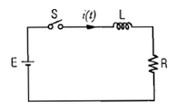
- 5×10-3
- 5×10-4
- 200
- 2000
(정답률: 62%)
74. 정전용량이 같은 콘덴서 2개를 병렬로 연결했을 때의 합성 정전용량은 직렬로 연결했을 때의 몇 배인가?
- 2
- 4
- 6
- 8
(정답률: 66%)
75. 대칭 5상 회로의 선간전압과 상전압의 위상차는?
- 27°
- 36°
- 54°
- 72°
(정답률: 65%)
76. 전달함수에 대한 설명으로 틀린 것은?
- 어떤 계의 전달함수는 그 계에 대한 임펄스 응답의 라플라스 변환과 같다.
- 전달함수는 출력라플라스변환/입력라플라스변환 으로 정의된다.
- 전달함수가 s가 될 때 적분요소라 한다.
- 어떤 계의 전달함수의 분모를 0으로 놓으면 이것이 곧 특성방정식이 된다.
(정답률: 55%)
77. 그림과 같은 대칭 3상 Y결선 부하 Z=6+j8Ω에 200V의 상전압이 공급될 때 선전류는 몇 A인가?
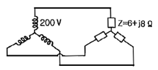
- 15
- 20
- 15√3
- 20√3
(정답률: 48%)
78. 그림과 같은 비정현파의 실효값[V]은?
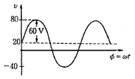
- 46.9
- 51.6
- 56.6
- 63.3
(정답률: 45%)
79. 정현파 교류 전압의 평균값은 최대값의 약 몇 %인가?
- 50.1
- 63.7
- 70.7
- 90.1
(정답률: 52%)
80. 4단자 회로에서 4단자 정수가
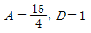
이고, 영상임피던스 일 때, 영상임피던스 Z01[Ω]은?- 9
- 6
- 4
- 2
(정답률: 51%)
5과목: 전기설비기술기준 및 판단 기준
81. 전자 개폐기의 조작회로 또는 초인벨 경보벨 등에 접속하는 전로로서 최대 사용전압이 60V 이하인 것으로 대지전압이 몇 V이하인 강 전류 전기의 전송에 사용하는 전로와 변압기로 결합되는 것을 소세력 회로라 하는가?
- 100
- 150
- 300
- 440
(정답률: 65%)
82. 지상에 설치한 380V용 저압 전동기의 금속제 외함에는 제 몇 종 접지공사를 하여야 하는가?(관련 규정 개정전 문제로 여기서는 기존 정답인 3번을 누르면 정답 처리됩니다. 자세한 내용은 해설을 참고하세요.)
- 제 1종 접지 공사
- 제 2종 접지 공사
- 제 3종 접지 공사
- 특별 제 3종 접지 공사
(정답률: 69%)
83. 제 2차 접근 상태를 바르게 설명한 것은?
- 가공전선이 전선의 절단 또는 지지물의 도괴등이 되는 경우에 당해 전선이 다른 시설물에 접속될 우려가 있는 상태
- 가공전선이 다른 시설물과 접근하는 경우에 당해 가공전선이 다른 시설물의 위쪽 또는 옆쪽에서 수평거리로 3m 미만인 곳에 시설되는 상태
- 가공전선이 다른 시설물과 접근하는 경우에 가공전선을 다른 시설물과 수평되게 시설되는 상태
- 가공선로에 제 2종 접지공사를 하고 보호망으로 보호하여 인축의 감전 상태를 방지하도록 조치하는 상태
(정답률: 58%)
84. 화약류 저장소의 전기설비의 시설기준으로 틀린 것은?
- 전로의 대지전압은 150V 이하일 것
- 전기기계기구는 전폐형의 것일 것
- 전용 개폐기 및 과전류 차단기는 화약류 저장소 밖에 설치할 것
- 개폐기 또는 과전류 차단기에서 화약류 저장소의 인입구까지의 배선은 케이블을 사용할 것
(정답률: 65%)
85. 고압 보안공사에 철탑을 지지물로 사용하는 경우 경간은 몇 m 이하이어야 하는가?
- 100
- 150
- 400
- 600
(정답률: 50%)
86. 옥내에 시설하는 전동기에 과부하 보호장치의 시설을 생략할 수 없는 경우는?
- 전동기가 단상의 것으로 전원측 전로에 시설하는 과전류 차단기의 정격전류가 15A 이하인 경우
- 전동기가 단상의 것으로 전원측 전로에 시설하는 경우 배선용 차단기의 정격전류가 20A 이하인 경우
- 전동기 운전 중 취급자가 상시 감시할 수 있는 위치에 시설하는 경우
- 전동기의 정격 출력이 0.75kW인 전동기
(정답률: 62%)
87. 전기 욕기용 전원장치로부터 욕기안의 전극까지의 전선 상호간 및 전선과 대지 사이에 절연저항 값은 몇 MΩ 이상이어야 하는가?(관련 규정 개정전 문제로 여기서는 기존 정답인 1번을 누르면 정답 처리됩니다. 자세한 내용은 해설을 참고하세요.)
- 0.1
- 0.2
- 0.3
- 0.4
(정답률: 64%)
88. 특고압 가공전선로의 지지물 중 전선로의 지지물 양쪽의 경간의 차가 큰 곳에 사용하는 철탑은?
- 내장형 철탑
- 인류형 철탑
- 보강형 철탑
- 각도형 철탑
(정답률: 75%)
89. 400V 미만의 저압 옥내배선을 할 때 점검할 수 없는 은폐장소에 할 수 없는 배선공사는?(오류 신고가 접수된 문제입니다. 반드시 정답과 해설을 확인하시기 바랍니다.)
- 금속관 공사
- 합성수지관 공사
- 금속몰드 공사
- 플로어덕트 공사
(정답률: 38%)
90. 특고압 가공전선을 삭도와 제 1차 접근상태로 시설되는 경우 최소 이격거리에 대한 설명 중 틀린 것은?
- 사용전압이 35kV 이하의 경우는 1.5m 이상
- 사용전압이 35kV 이하이고 특고압 절연전선을 사용한 경우 1m 이상
- 사용전압이 70kV인 경우 2.12m 이상
- 사용전압이 35kV를 초과하고 60kV 이하인 경우 2.0m 이상
(정답률: 29%)
91. 저압 연접인입선은 폭 몇 m를 초과하는 도로를 횡단하지 않아야 하는가?
- 5
- 6
- 7
- 8
(정답률: 55%)
92. 임시 가공전선로의 지지물로 철탑을 사용시 사용기간은?
- 1개월 이내
- 3개월 이내
- 4개월 이내
- 6개월 이내
(정답률: 54%)
93. 고압 및 특고압의 전로에 시설하는 피뢰기의 접지공사는?(관련 규정 개정전 문제로 여기서는 기존 정답인 4번을 누르면 정답 처리됩니다. 자세한 내용은 해설을 참고하세요.)
- 특별 제 3종
- 제 3종
- 제 2종
- 제 1종
(정답률: 60%)
94. 지중전선로에서 지중전선을 넣은 방호장치의 금속제부분, 금속제의 전선 접속함에 적합한 접지공사는?(관련 규정 개정전 문제로 여기서는 기존 정답인 3번을 누르면 정답 처리됩니다. 자세한 내용은 해설을 참고하세요.)
- 제 1종 접지 공사
- 제 2종 접지 공사
- 제 3종 접지 공사
- 특별 제 3종 접지 공사
(정답률: 63%)
95. 특고압 가공전선이 도로, 횡단보도교, 철도와 제 1차 접근상태로 시설되는 경우 특고압 가공전선로는 제 몇 종 보안공사를 하여야 되는가?
- 제 1종 특고압 보안공사
- 제 2종 특고압 보안공사
- 제 3종 특고압 보안공사
- 특별 제 3종 특고압 보안공사
(정답률: 49%)
96. 폭연성 분진 또는 화약류의 분말이 존재하는 곳의 저압 옥내배선은 어느 공사에 의하는가?
- 애자 사용 공사 또는 가요 전선관 공사
- 캡타이어 케이블 공사
- 합성 수지관 공사
- 금속관 공사 또는 케이블 공사
(정답률: 68%)
97. 가공전선로에 사용하는 지지물의 강도 계산시 구성재의 수직 투영면적 1m2에 대한 풍압을 기초로 적용하는 갑종풍압하중 값의 기준이 잘못된 것은?
- 목주 : 588 Pa
- 원형 철주 : 588 Pa
- 철근 콘크리트주 : 1117 Pa
- 강관으로 구성된 철탑 : 1255 Pa
(정답률: 63%)
98. 고압 가공전선이 경동선인 경우 안전율은 얼마 이상이어야 하는가?
- 2.0
- 2.2
- 2.5
- 3.0
(정답률: 47%)
99. 일반주택 및 아파트 각 호실의 현관 등은 몇 분 이내에 소등되는 타임스위치를 시설하여야 하는가?
- 1분
- 3분
- 5분
- 10분
(정답률: 65%)
100. 220V용 유도전동기의 철대 및 금속제 외함에 적합한 접지공사는?(관련 규정 개정전 문제로 여기서는 기존 정답인 3번을 누르면 정답 처리됩니다. 자세한 내용은 해설을 참고하세요.)
- 제 1종 접지공사
- 제 2종 접지공사
- 제 3종 접지공사
- 특별 제 3종 접지공사
(정답률: 68%)